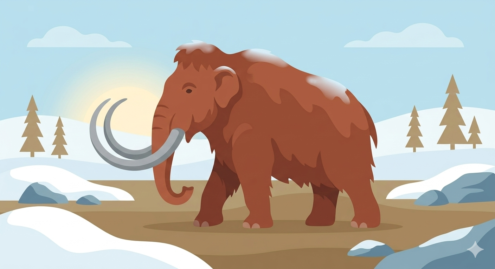
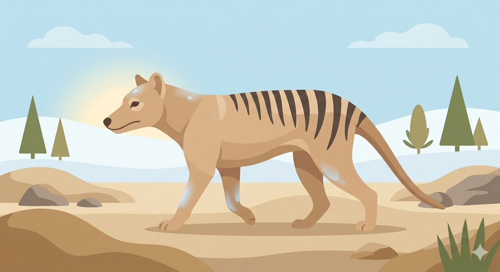
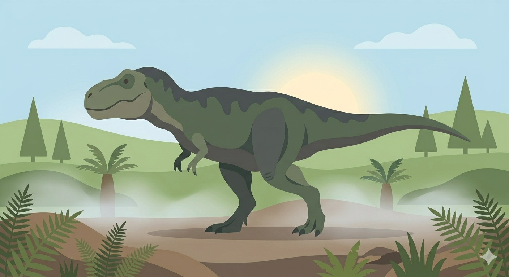

Engineered for the Pleistocene Park initiative, restoring keystone megafauna to combat global permafrost melt.
The return of the Tasmanian apex predator. A fundamental correction to the Australian ecological imbalance.


The crown jewel of de-extinction science. A massive undertaking in biological architecture and containment sovereignty.